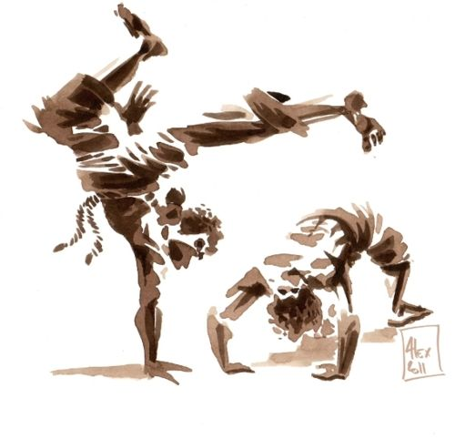
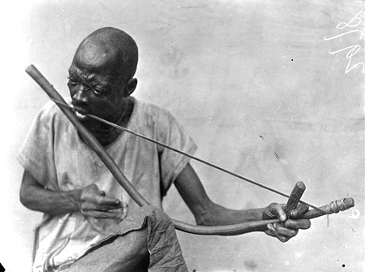

<h1> capoeira </h1>

<a href="https://en.wikipedia.org/wiki/Capoeira" target="_blank"
title="Пошукова система Google">capoeira</a>
<p><h3>включає удари ногами і руками, підсічки, підніжки, кидки, а також удари головою.</h1>
</p>
<article><h2>Беримбау (berimbau) — бразильский музыкальный лук диной 120—170 см со стальной струной</h2></article>

<article><h3>основний музичний інструмент</h3></article>